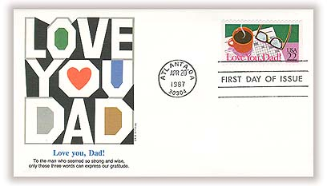
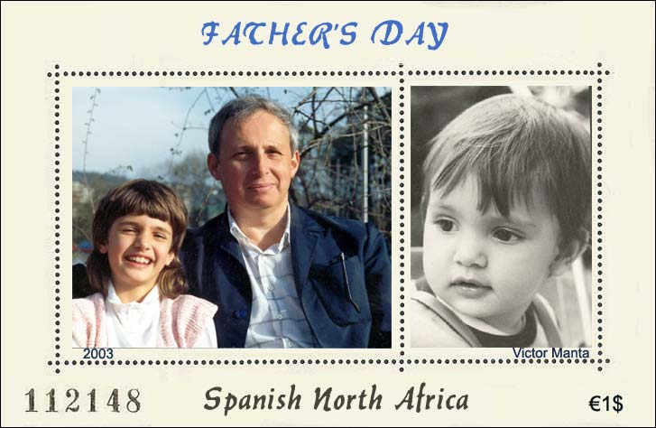

|
Created:
05/09/03. Revised:
01/07/06. |
|
|
MEMORABLE POSTINGS IN THE RCSD NEWSGROUP
The United States is one of the few
countries in the world that has an official day on which fathers are honored
by their children. On the third Sunday in June, fathers all across the
United States are given presents, treated to dinner or otherwise made to
feel special. . In 1909, Mrs. Dodd approached her own minister and others in Spokane about having a church service dedicated to fathers on June 5, her father's birthday. That date was too soon for her minister to prepare the service, so he spoke a few weeks later on June 19th. From then on, the state of Washington celebrated the third Sunday in June as Father's Day. Children made special desserts, or visited their father if they lived apart. ... In 1966 President Lyndon Johnson signed a presidential proclamation declaring the 3rd Sunday of June as Father's Day and put the official stamp on a celebration that was going on for almost half a century.
 To express the special appreciation
for Dad, the U.S. Postal Service has issued on April 20, 1987 (Scott 2270)
a particularly meaningful stamp as part of its Special Occasions Messages
booklet. The stamp depicts a steaming cup of coffee and a pair of reading
classes set upon a newspaper, with a simple horizontal banner reading: "Love
You, Dad!" The stamp combined with the cachet art on this First Day Cover,
presents a colorful and bold rendition of the "Love You, Dad!" theme, and
forms a loving tribute to fathers everywhere. Posting on RCSD by the author of this site, on 5/4/2003: There is one thing that I don't understand in the above story. Why Sonora thought that her father was selfless? Is it just because he raised his children, and this without the help of a second wife? Selfless are rather those who raise the children from neighborhood (who aren't theirs), even if they neglect their own. And yes, SNA will consider a Father's Day issue, one expressly dedicated to selfish fathers.
 Donna wrote: But Victor there is still the need for the "selfish" Father's Day stamp. :-D The 9th of May, an historical date that still means a lot to many Europeans, was chosen by the SNAPO as Father's Day. In commemoration of it, SNAPO issued on the 9th of May 2003 its first miniature sheet dedicated to selfish, loving fathers worldwide. The above pictures, shown on the minisheet, where selected by a heterosexual jury, consisting of two personalities who perfectly know the displayed subjects. Both photographs were unanimously approved. Printed by the Courvoisier SNA Security Printer, at Ciudad de Leon, SNA. Print run: 125,000 numbered pieces. Do you wonder why are fathers so proud of their children? OK, click here.
|
|
Created:
05/09/03. Revised:
01/07/06. |
|